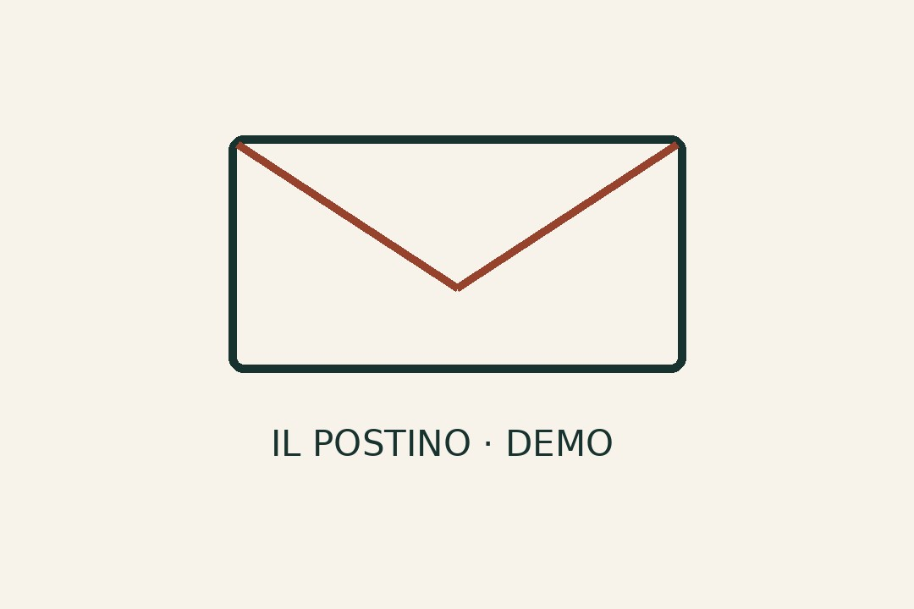

Blog
La primera carta

Esta es una entrada de muestra de Il Postino. Podés abrirla, mirar la imagen y volver al índice del blog o a la portada.
En tu propio espacio, las cartas serán tuyas: relatos, fotos, proyectos y lo que elijas compartir. La web reúne esas publicaciones en un lugar propio, con un enlace que podés pasar a cualquiera.
Esta imagen es una ilustración de prueba, sin datos personales.